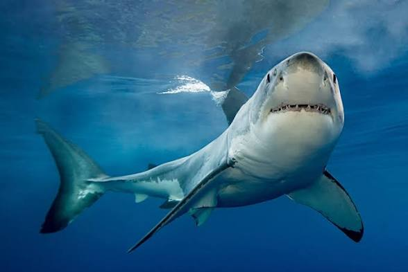

Life of a Shark

Sharks are among the oldest and most successful predators on Earth, having roamed the world's oceans for more than 450 million years - long before the dinosaurs appeared. There are more than 500 known species of shark, ranging from the tiny dwarf lanternshark, which fits in the palm of a hand, to the magnificent whale shark, the largest fish in the ocean, which can grow up to 18 metres in length. Despite their fearsome reputation, the vast majority of shark species are completely harmless to humans and play a crucial role in maintaining the health of marine ecosystems. As apex predators, sharks regulate the populations of the species below them in the food chain, preventing any single species from dominating and disrupting the balance of ocean life. Sharks do not have bones - their skeletons are made entirely of cartilage, which is lighter and more flexible than bone, allowing them to move through the water with remarkable efficiency. Their skin is covered in tiny tooth-like scales called dermal denticles, which reduce drag and allow them to swim faster and more quietly than most other fish. Sharks have an extraordinary array of senses including an ability to detect the electrical fields produced by other animals through special organs called the ampullae of Lorenzini, making them highly effective hunters even in complete darkness or murky water. Many shark species must keep swimming constantly to push water over their gills and breathe, meaning they effectively never stop moving throughout their entire lives. Sharks give birth in a variety of ways depending on the species - some lay eggs, others give birth to live young, and some practice a remarkable phenomenon called intrauterine cannibalism where the strongest embryo consumes its siblings before birth. Despite being apex predators themselves, sharks face serious threats from human activity including overfishing, finning, bycatch, and habitat destruction, with many species now classified as endangered or critically endangered.
The deep sea is home to some of the most mysterious and least understood shark species on the planet. The goblin shark, with its distinctive elongated snout and protrusible jaws, lurks in the darkness at depths of over 1,200 metres. The frilled shark, often described as a living fossil, resembles an eel more than a typical shark and has changed very little in millions of years. Greenland sharks are among the longest-living vertebrates on Earth, with some individuals estimated to be over 400 years old based on carbon dating of their eye lenses. These ancient creatures move so slowly through the freezing Arctic waters that they are nearly blind and often carry parasites on their eyes, yet they manage to prey on seals, fish, and even reindeer that wander too close to the water's edge.
Facts About Sharks
- Sharks have been on Earth for over 450 million years, predating even the first trees which appeared around 350 million years ago.
- A shark can go through up to 30,000 teeth in its lifetime as old teeth fall out and new ones move forward to replace them.
- The whale shark is the largest fish in the ocean but feeds only on tiny plankton, krill, and small fish filtered through its enormous mouth.
- Sharks are more likely to be killed by humans than to kill them - approximately 100 million sharks are killed by humans every year.
- The Greenland shark grows only about one centimetre per year and may live for over 400 years, making it the longest-lived vertebrate known to science.